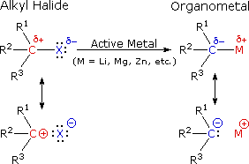
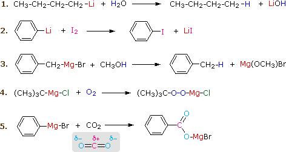
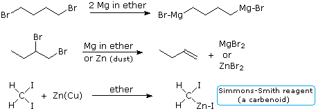
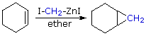
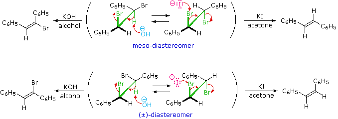

The alkali metals (Li, Na, K etc.) and the alkaline earth metals (Mg and Ca, together with Zn) are good reducing agents, the former being stronger than the latter. Sodium, for example, reduces elemental chlorine to chloride anion (sodium is oxidized to its cation), as do the other metals under varying conditions. In a similar fashion these same metals reduce the carbon-halogen bonds of alkyl halides. The halogen is converted to halide anion, and the carbon bonds to the metal (the carbon has carbanionic character). Halide reactivity increases in the order: Cl < Br < I. The following equations illustrate these reactions for the commonly used metals lithium and magnesium (R may be hydrogen or alkyl groups in any combination). The alkyl magnesium halides described in the second reaction are called Grignard Reagents after the French chemist, Victor Grignard, who discovered them. The other metals mentioned above react in a similar manner, but the two shown here are the most widely used. Although the formulas drawn here for the alkyl lithium and Grignard reagents reflect the stoichiometry of the reactions and are widely used in the chemical literature, they do not accurately depict the structural nature of these remarkable substances. Mixtures of polymeric and other associated and complexed species are in equilibrium under the conditions normally used for their preparation.
R3C-X + 2Li ——> R3C-Li + LiX An Alkyl Lithium Reagent R3C-X + Mg ——> R3C-MgX A Grignard Reagent
The metals referred to here are insoluble in most organic solvents, hence these reactions are clearly heterogeneous, i.e. take place on the metal surface. The conditions necessary to achieve a successful reaction are critical. First, the metal must be clean and finely divided so as to provide the largest possible surface area for reaction. Second, a suitable solvent must be used. For alkyl lithium formation pentane, hexane or ethyl ether may be used; but ethyl ether or THF are essential for Grignard reagent formation. Third, since these organometallic compounds are very reactive, contaminants such as water, alcohols and oxygen must be avoided.
These reactions are obviously substitution reactions, but they cannot be classified as nucleophilic substitutions, as were the earlier reactions of alkyl halides. Because the functional carbon atom has been reduced, the polarity of the resulting functional group is inverted (an originally electrophilic carbon becomes nucleophilic). This change, shown below, makes alkyl lithium and Grignard reagents unique and useful reactants in synthesis.

Reactions of organolithium and Grignard reagents reflect the nucleophilic (and basic) character of the functional carbon in these compounds. Many examples of such reactions will be encountered in future discussions, and five simple examples are shown below. The first and third equations demonstrate the strongly basic nature of these compounds, which bond rapidly to the weakly acidic protons of water and methyl alcohol (colored blue). The nucleophilic carbon of these reagents also bonds readily with electrophiles such as iodine (second equation) and carbon dioxide (fifth equation). The polarity of the carbon-oxygen double bonds of CO2 makes the carbon atom electrophilic, shown by the formula in the shaded box, so the nucleophilic carbon of the Grignard reagent bonds to this site. As noted above, solutions of these reagents must also be protected from oxygen, since peroxides are formed (equation 4).

Another important reaction exhibited by these organometallic reagents is metal exchange. In the first example below, methyl lithium reacts with cuprous iodide to give a lithium dimethylcopper reagent, which is referred to as a Gilman reagent. Other alkyl lithiums give similar Gilman reagents. A useful application of these reagents is their ability to couple with alkyl, vinyl and aryl iodides, as shown in the second equation. Later we shall find that Gilman reagents also display useful carbon-carbon bond forming reactions with conjugated enones and with acyl chlorides.
2 CH3Li + CuI ——> (CH3)2CuLi + LiI Formation of a Gilman Reagent (C3H7)2CuLi + C6H5I ——> C6H5-C3H7 + LiI + C3H7Cu A Coupling Reaction
The formation of organometallic reagents from alkyl halides is more tolerant of structural variation than were the nucleophilic substitutions described earlier. Changes in carbon hybridization have little effect on the reaction, and 1º, 2º and 3º-alkyl halides all react in the same manner. One restriction, of course, is the necessary absence of incompatible functional groups elsewhere in the reactant molecule. For example, 5-bromo-1-pentanol fails to give a Grignard reagent (or a lithium reagent) because the hydroxyl group protonates this reactive function as soon as it is formed.
BrCH2CH2CH2CH2CH2OH + Mg ——> [ BrMgCH2CH2CH2CH2CH2OH ] ——> HCH2CH2CH2CH2CH2OMgBr
Exchange metalation is particularly useful when it can be directed to specific sites in a molecule. One such case is the directed ortho metalation of aromatic rings bearing a suitable directing group.
If two halogen atoms are present in a given compound, reactions with reducing metals may take different paths depending on how close the carbon-halogen bonds are to each other. If they are separated by four or more carbons, as in the first example below, a bis-organometallic compound may be formed. However, if the halogens are bonded to adjacent (vicinal) carbons, an elimination takes place with formation of a double bond. Since vicinal-dihalides are usually made by adding a halogen to a double bond, this reaction is mainly useful for relating structures to each other. The last example, in which two halogens are bonded to the same carbon, referred to as geminal (twinned), gives an unusual reagent which may either react as a carbon nucleophile or, by elimination, as a carbene. Such reagents are often termed carbenoid.

The solution structure of the Simmons-Smith reagent is less well understood than that of the Grignard reagent, but the formula given here is as useful as any that have been proposed. Other alpha-halogenated organometallic reagents, such as ClCH2Li, BrCH2Li, Cl2CHLi and Cl3CLi, have been prepared,

Elimination reactions of the stereoisomeric 1,2-dibromo-1,2-diphenylethanes provide a nice summary of the principles discussed above. The following illustration shows first the meso-diastereomer and below it one enantiomer of the racemic-diastereomer. In each case two conformers are drawn within parentheses, and the anti-relationship of selected vicinal groups in each is colored green. The reaction proceeding to the left is a dehydrohalogenation induced by treatment with KOH in alcohol. Since this is a stereospecific elimination, each diastereomer gives a different stereoisomeric product. The reaction to the right is a dehalogenation (the reverse of halogen addition to an alkene), caused by treatment with iodide anion. Zinc dust effects the same reaction, but with a lower degree of stereospecificity. The mechanism of the iodide anion reaction is shown by red arrows in the top example. A similar mechanism explains the comparable elimination of the racemic isomer. In both reactions an anti-transition state is observed.

The two stereoisomers of 1-bromo-1,2-diphenylethene (shown on the left of the diagram) undergo a second dehydrobromination reaction on more vigorous treatment with base, as shown in the following equation. This elimination generates the same alkyne (carbon-carbon triple bond) from each of the bromo-alkenes. Interestingly, the (Z)-isomer (lower structure) eliminates more rapidly than the (E)-isomer (upper structure), again showing a preference for anti-orientation of eliminating groups.
C6H5CH=CBrC6H5 + KOH ——> C6H5C≡CC6H5 + KBr + H2O
The last reaction shown above suggests that alkynes might be prepared from alkenes by a two stage procedure, consisting first of chlorine or bromine addition to the double bond, and secondly a base induced double dehydrohalogenation. For example, reaction of 1-butene with bromine would give 1,2-dibromobutane, and on treatment with base this vicinal dibromide would be expected to yield 1-bromo-1-butene followed by a second elimination to 1-butyne.
CH3CH2CH=CH2 + Br2 ——> CH3CH2CHBr–CH2Br + base ——> CH3CH2CH=CHBr + base ——> CH3CH2C≡CH
In practice this strategy works, but it requires care in the selection of the base and solvent. If KOH in alcohol is used, the first elimination is much faster than the second, so the bromoalkene may be isolated if desired. Under more extreme conditions the second elimination takes place, but isomerization of the triple bond also occurs, with the more stable isomer (2-butyne) being formed along with 1-butyne, even becoming the chief product. To facilitate the second elimination and avoid isomerization the very strong base sodium amide, NaNH2, may be used. Since ammonia is a much weaker acid than water (by a factor of 1018), its conjugate base is proportionally stronger than hydroxide anion (the conjugate base of water), and the elimination of HBr from the bromoalkene may be conducted at relatively low temperature. Also, the acidity of the sp-hybridized C-H bond of the terminal alkyne traps the initially formed 1-butyne in the form of its sodium salt.
CH3CH2C≡CH + NaNH2 ——> CH3CH2C≡C:(–) Na(+) + NH3
An additional complication of this procedure is that the 1-bromo-1-butene product of the first elimination (see previous equations) is accompanied by its 2-bromo-1-butene isomer, CH3CH2CBr=CH2, and elimination of HBr from this bromoalkene not only gives 1-butyne (base attack at C-1) but also 1,2-butadiene, CH3CH=C=CH2, by base attack at C-3. Dienes of this kind, in which the central carbon is sp-hybridized, are called allenes and are said to have cumulated double bonds. They are usually less stable than their alkyne isomers.
The following problems review many aspects of organohalide chemistry. The first question focuses on nomenclature. The second question concerns the relative reactivity of selected compounds. The third question requires you to predict the kind of reaction, if any, each compound in a group would be expected to give. The fourth question is similar, but asks you to discriminate the reactivity of ten different compounds with four reagents. The fifth asks you to draw the product of a reaction selected from 48 possible combinations of organohalide and reagent. Finally a random quiz of halide reactions may be examined.
This page is the property of The Edvibe Team. Comments, questions and errors should be sent to contact@edvibe.co.ke. These pages are provided to the IOCD to assist in capacity building in chemical education. 05/05/2013